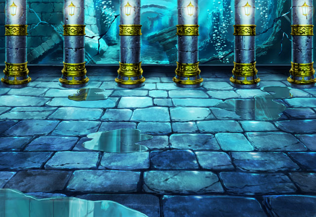

リム
さて、先輩がどうしてもと言うので、 おとぎ話の詳細を調べてきましたよ！
リム
この海神と少女の伝説、 思ったよりも切ないお話でした。
リム
というのも、海神の愛した少女は 人間同士の争いで命を落とし、
リム
海神の涙は嵐を呼び起こし、 航行する船は尽く沈んでしまい……
？？？
はい！はい！すみません！ 手短に済ませます！はい！
リム
先輩ごめんなさい、 話の途中で他の重要な案件が……
リム
えーと、と、とにかく、その海神、 水帝神オルダス・デルバは
リム
憎しみと悲しみが元で 狂気に陥ってしまうんです！
リム
それを例の少女の妹の孫かひ孫が 穢れ無き心で癒して、
リム
その海中神殿に海神を眠らせた。 そういう伝説があるんです。
リム
そもそも、神が人間に恋するなんて、 実話なわけがないですよねー。
リム
え？海神っぽい敵と戦った？ 探索中に？本当ですか？？
リム
まあ、でも、場所が場所ですからね、 魔物もそれっぽいと思いますよ？
リム
とりあえず、海中神殿の調査 お疲れ様でした！
リム
強力な魔物も倒していただけた みたいですし、探索大成功ですね♪
リム
ロマンチックな伝説の残る 海の中の神殿かぁ……